BASE · Telenet · Telco · B2C · 2026 · In development Q4 2026
Nearly half of customers who purchased eSIM never activated it. Analytics revealed a three-stage drop across the post-purchase flow. I redesigned the MNP and eSIM activation flows for BASE and Telenet — removing a login barrier for new customers, consolidating 5–6 screens into 3, and adding a recovery path for device incompatibility.
UX Designer and UX lead. Owned the full flow — research, flow design, screen design, copy — and guided 2 designers on connected parts of the journey. Worked with an external research partner and coordinated dev handoff on legacy platform constraints.
Figma · Qlik · Adobe Analytics · ContentSquare
eSIM orders were consistently outnumbering activations. The post-purchase journey had three separate drop-off stages — each one invisible to the team until analytics mapped them together.
Activation funnel — baseline (pre-redesign)
Three structural issues caused the drop:
New customers had no credentials. A login wall appeared right after purchase — before new customers had set up an account. The flow asked for something they didn't have.
MNP flow was fragmented. Up to 6 screens including a stepper overview, a separate review-and-accept screen, and a return-to-stepper — each one a drop-off point with no new decision being made.
Critical information was easy to miss. PIN codes, QR codes, and installation CTAs competed for attention on one dense screen. Users clicked "Continue" and skipped what they needed.
Make eSIM the default choice over physical SIM by 2027. Immediate goal: increase activation rates by reducing drop-off across MNP and activation flows. Supporting goals: grow eSIM digital sales share, reduce support contacts from failed activations, reduce retail costs.
Market context: ~50% of devices eSIM-capable today · 85–95% by 2028 · eSIM sales stuck at ~6% · ~10% higher activation rates vs physical SIM when flow works
External qualitative research — existing flow
Partner agency ran interviews and usability tests on the current design before redesign started. Produced the customer journey map across 6 stages.
→ Three moments with highest impact: The Choice (discovery), The Preparation (post-order), The Recovery (device loss). The biggest barrier was invisibility — eSIM never reaching a clear choice moment, not active rejection.
Analytics — Qlik + Adobe Analytics
Mapped existing flow against order-to-activation data. Identified the three drop-off stages and their exact percentages.
→ 21.5% lost before activation even started — at the credentials step. This was invisible in screen-count audits and only showed up when we looked at what customers actually had in hand at each step.
Pre-development usability testing — redesigned flow
Tested the new MNP + activation flow with real customers before dev handoff.
→ Validated the single-screen porting decision. Confirmed the PID-based flow removed the credentials blocker. Users completed the flow without prompting on where to find required information.
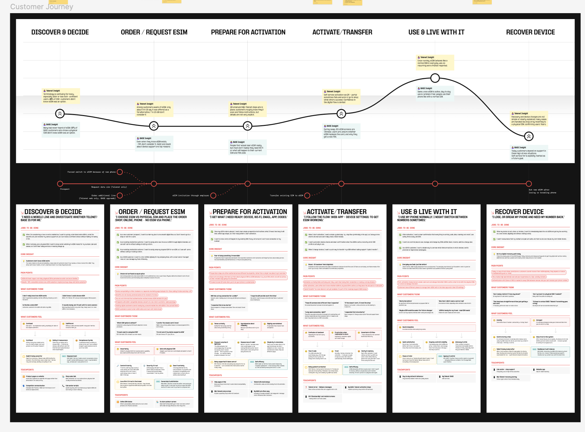
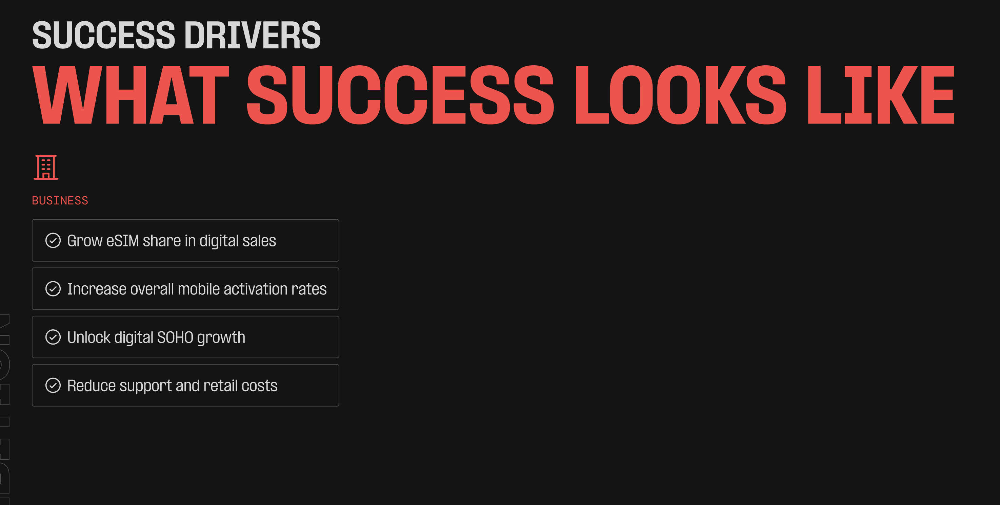
Legacy authentication. The platform required SMS self-authentication before certain actions — this couldn't be removed, only worked around.
New customer credentials gap. New customers don't have account login credentials at the moment of purchase. Any solution had to work without a login.
Device incompatibility after purchase. Compatibility issues surface only after the order is complete — a fix had to be a recovery path, not a prevention step.
Why PID instead of account login?
New customers don't have credentials at the moment they most want to activate — right after purchase. Requiring login first meant asking for something they didn't have. PID (customer number from order confirmation) lets activation start immediately, without an account. Removed the biggest single drop-off point.
Why merge 5–6 MNP screens into 3?
The old flow split porting across a stepper overview, data entry, a separate review-and-accept screen, and a return-to-stepper — each transition a drop-off with no new decision being made. New design: current number shown prominently, subscription type selection with inline field reveal, T&C acceptance — one screen, one decision point. Then straight from MNP confirmation to activation.
Why split the activation screen into 2 steps?
The single dense activation screen put device selection, QR code, PIN code, and installation CTA all together. "Continue" was the dominant CTA — users followed it and missed the QR or PIN entirely. Separating device selection from installation makes the primary action impossible to skip.
Why add a physical SIM fallback for incompatible devices?
An incompatible device after purchase isn't a UX copy problem — it's a dead end. The customer has paid and now can't get connectivity. Adding the option to switch to physical SIM at the exact failure point keeps them in a completable flow instead of exiting them into support.
Design — before & after
MNP Flow — Number Transfer
Old flow: stepper overview → data entry → separate review screen → back to stepper → activation. New flow: direct to data entry with number visible, inline selection, T&C on same screen → straight to activation confirmation.
Before — 5+ screens
After — 3 screens
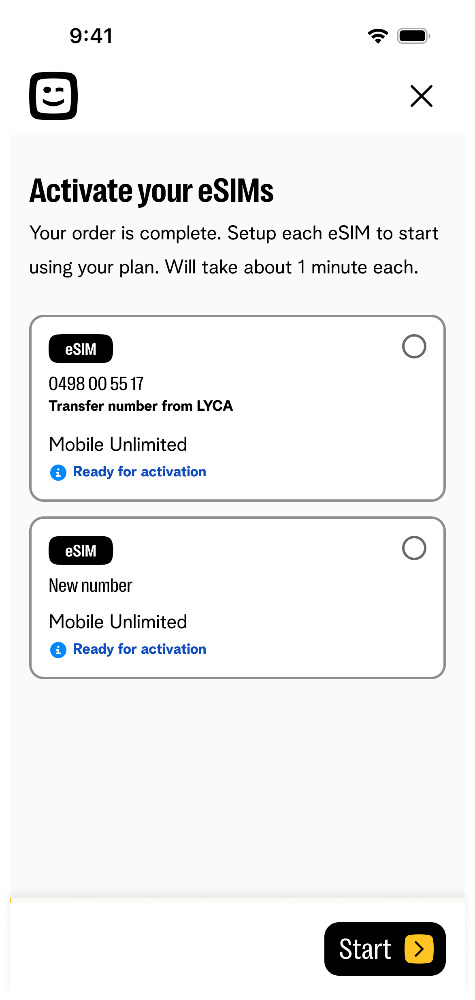
eSIM selection
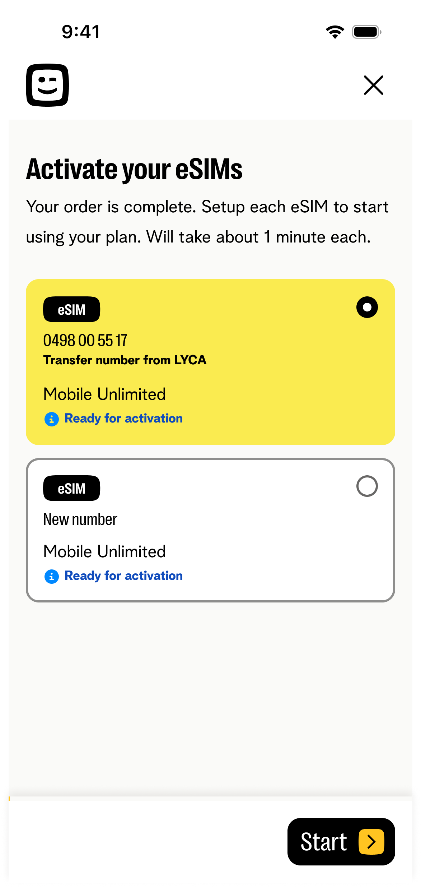
Selected state
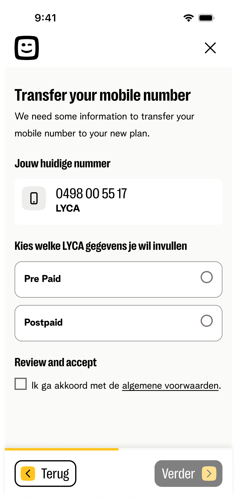
MNP — number + type
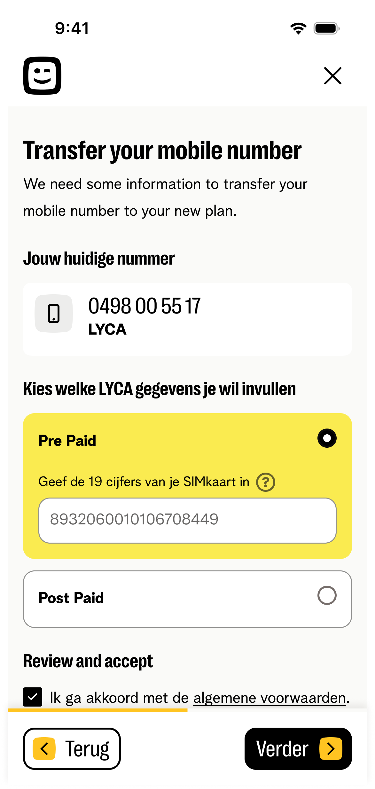
Prepaid inline
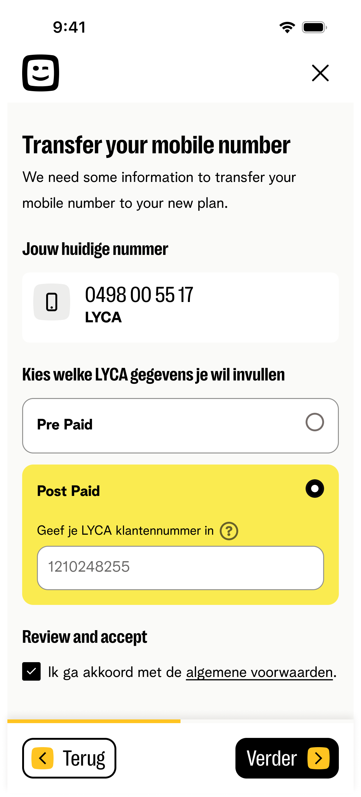
Postpaid inline
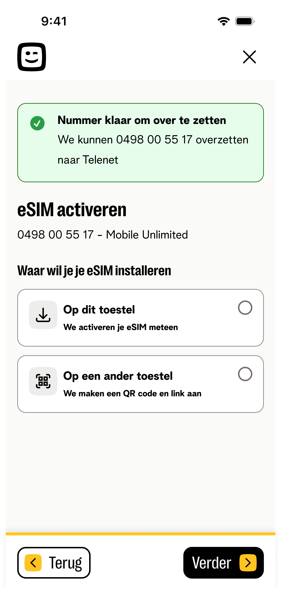
Success → activation
eSIM Activation — Install on this device
Old: device selection + QR + PIN + install CTA on one screen — users clicked Continue and missed installation. New: device selection first, then dedicated installation screen with PIN visible and primary CTA as the only action.
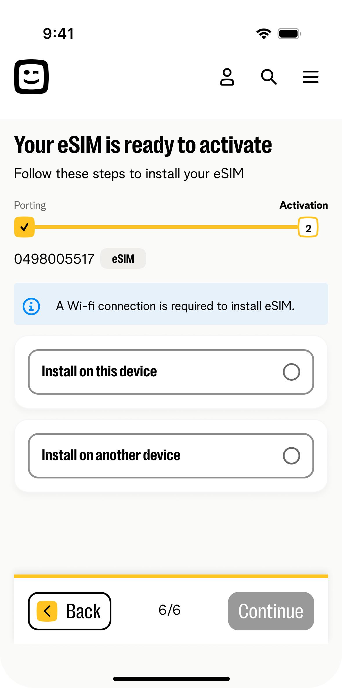
Install on this device
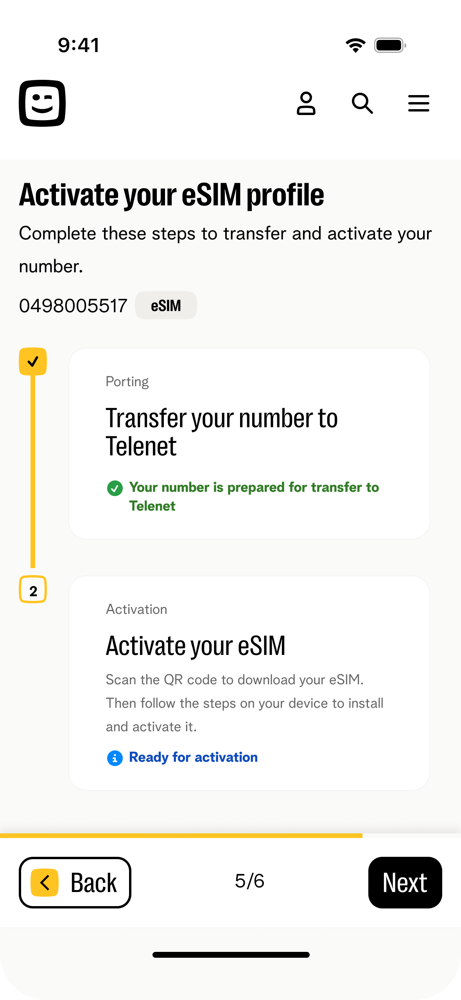
SIM details entry
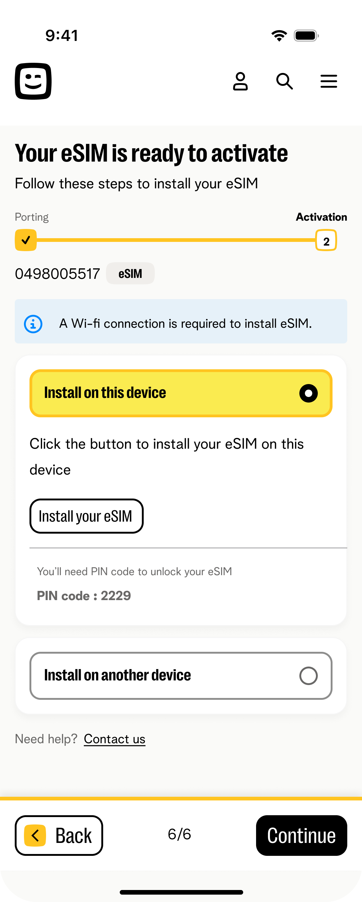
Another device
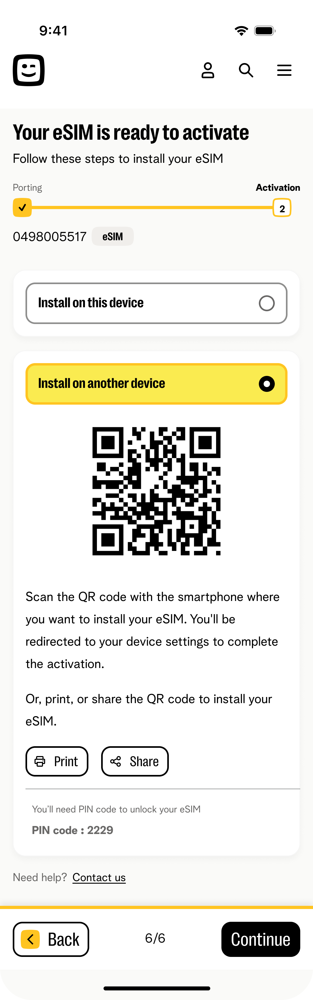
QR + PIN visible
Baseline established
43.7% of eSIM buyers never activated — three drop-off stages mapped with exact percentages. This is the number the redesign targets.
Pre-launch validation
Usability testing confirmed: PID flow removed the credentials blocker, single-screen porting was completed without confusion, and PIN/QR were no longer missed.
In development
Ships Q4 2026 across BASE and Telenet. First post-launch data readout planned Q1 2027 — will measure against the 56.3% baseline activation rate.
What I learned
The biggest lever wasn't screen count — it was sequencing. The real blocker (login before credentials exist) was invisible in screen-count audits and only showed up when we looked at what customers actually had in hand at each step.